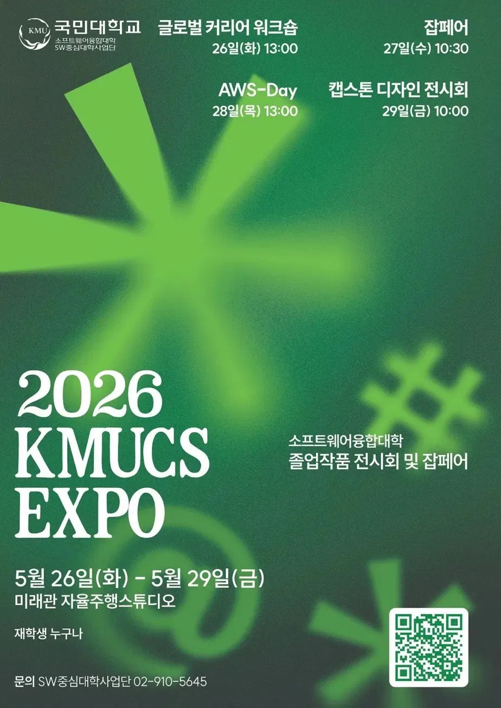

활동 감상문 03
KMUCS EXPO 2026 참가 후기

준비 기간이 전시 당일보다 훨씬 길었다. 막상 부스 앞에 서 있으니 그 시간이 다 거기 눌려 있는 느낌이었다. 뭔가 보여줄 수 있는 게 생겼다는 게, 강의실에서 공부만 할 때랑은 달랐다.
처음에는 좀 버벅였다. 준비해 온 말이 눈앞에 사람이 서 있으면 그냥 뒤죽박죽 나왔다. '지금 내가 뭔 말 하는 거지' 싶은 순간이 있었다.
근데 실제로 화면 눌러보면서 "이거 괜찮네" 하는 말을 들었을 때는 진짜 뿌듯했다. 그 한마디가 생각보다 오래 기억에 남는다.
잡페어는 팀원이 가자고 해서 따라갔는데 꽤 오래 있었다. 현장에 있는 분들이 어떤 걸 중요하게 보는지, 어떤 기술 쓰는지 — 듣는 것만으로도 도움이 됐다. 명함도 몇 개 받았다.
다른 팀들 보는 것도 자극이 됐다. 잘 만든 팀 앞에서 솔직히 부러웠다. 저 UI 어떻게 만들었지, 저 기능은 어떻게 구현했지 — 그냥 보면서 배우는 게 있었다.
한국어로 기술 설명하는 건 아직도 어렵다. 코드는 돌아가는데 그걸 말로 못 전달하면 소용없다는 걸 이번에 다시 느꼈다. 외국어로 전공 배우는 입장이라 더 그런 것 같다. 연습이 필요하다.
다음에 또 참가하면 이번보다는 덜 긴장하고 싶다.